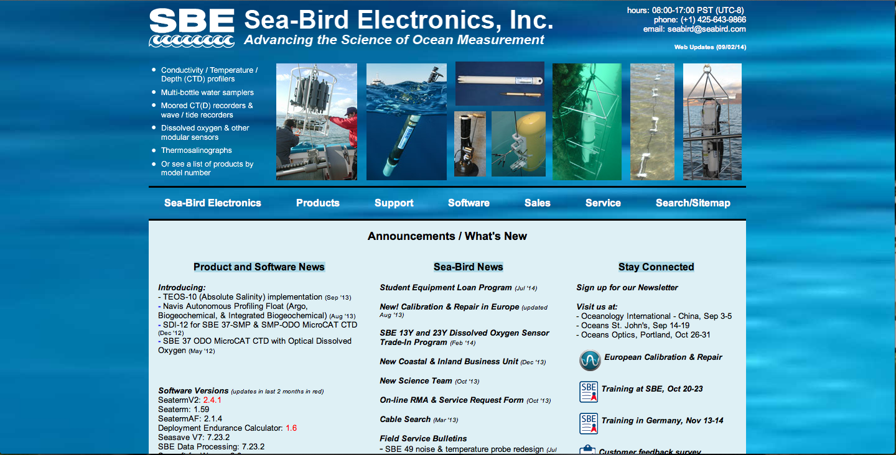
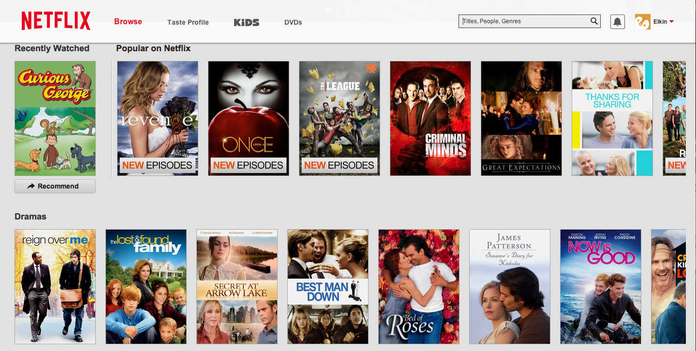

Bad Websites
Bitch Slap Cosmetics

- The colors are too strong
- It is very hard to read
- The pink text and color on top of the black is not pleasing to the eye
- The pictures could be used a lot better
- The buttons are not easy to read
- This page needs to be re done ASAP!
SeaBird Electronics

- The type could be worked a lot more, the texts have different weights which could be hard to notice the difference in the importance of it.
- The photography could be worked a to more and it could be incorporated in a better way, it is the importance of the company
but it is not shown very well on your website.
- The text is very tight very hard to read. Also having half white text and half black just makes a big jump for the eyes and it can be
uncomfortable to read.
- There are some errors on spelling, well more just capitals and things like that.
- The info about hours and phone number are usually at the bottom of the page, in this case is on the top right and its distracting
- The information on the page could be minimized and/ or better organized
- The columns that are formed on the white box could be simplify a lot. They could be separated and the stay connected could just
be the simble and have a link to open a new tab for each page. Also have all the buttons for each page like Facebook and youtube be the same color
- Everyone must know what SeaBird is if they are going on the page, so the background is very unnecessary.
- The logos could be placed and used better,and the one that is on the bottom looks very weird with the white box around it.
Good Websites
Netflix

- The organization on this website is great
- The color selection is simple
- The options of having a list to watch later
- The categories and how they are divided are great
- The font chosen isvery easy to read and its consistant
- All the covers are the same size so its easy to go through them
- This is a very simple layout but it works great
- The colums make it very clean
- It is easy to travel around the page
- The only colors that are popping are the own pictures
- There is nothing complicated about the background so its easy to read